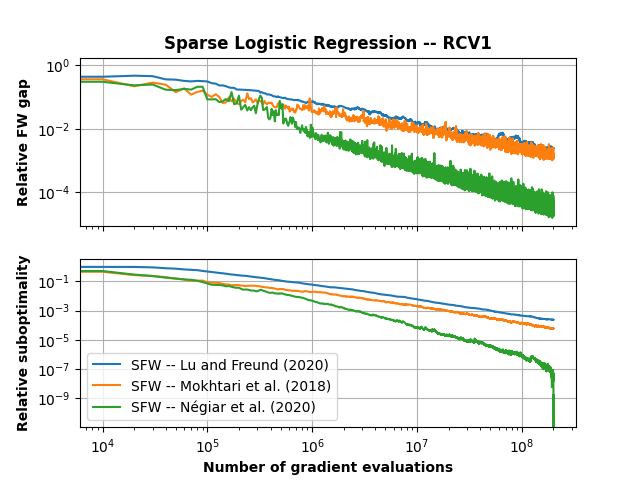

Note
Click here to download the full example code
Comparison of variants of Stochastic FW on real data¶
The problem solved in this case is a L1 constrained logistic regression (sometimes referred to as sparse logistic regression).
Out:
Running SAGFW
Running MHK
Running LF
Plotting...
Done.
import matplotlib.pyplot as plt
import numpy as np
import copt as cp
# .. Load dataset ..
import copt.constraint
import copt.loss
np.random.seed(0)
X, y = cp.datasets.load_rcv1("train")
dataset_name = "RCV1"
n_samples, n_features = X.shape
batch_size = 500
max_iter = int(1e4)
freq = max(n_samples // (batch_size * 2), 1)
# .. objective function and regularizer ..
f = copt.loss.LogLoss(X, y)
constraint = copt.constraint.L1Ball(2e3)
# .. callbacks to track progress ..
def fw_gap(x):
_, grad = f.f_grad(x)
return constraint.lmo(-grad, x)[0].dot(-grad)
class TraceGaps(cp.utils.Trace):
def __init__(self, f=None, freq=1):
super(TraceGaps, self).__init__(f, freq)
self.trace_gaps = []
def __call__(self, dl):
if self._counter % self.freq == 0:
self.trace_gaps.append(fw_gap(dl['x']))
super(TraceGaps, self).__call__(dl)
cb_SAG = TraceGaps(f, freq=freq)
cb_MHK = TraceGaps(f, freq=freq)
cb_LF = TraceGaps(f, freq=freq)
# .. run the SFW algorithm ..
print("Running SAGFW")
result_SAG = cp.minimize_sfw(
f.partial_deriv,
X,
y,
np.zeros(n_features),
constraint.lmo,
batch_size,
callback=cb_SAG,
tol=0,
max_iter=max_iter,
variant='SAG'
)
print("Running MHK")
result_MHK = cp.minimize_sfw(
f.partial_deriv,
X,
y,
np.zeros(n_features),
constraint.lmo,
batch_size,
callback=cb_MHK,
tol=0,
max_iter=max_iter,
variant='MHK'
)
print("Running LF")
result_LF = cp.minimize_sfw(
f.partial_deriv,
X,
y,
np.zeros(n_features),
constraint.lmo,
batch_size,
callback=cb_LF,
tol=0,
max_iter=max_iter,
variant='LF'
)
print("Plotting...")
# .. plot the result ..
max_gap = max(cb_SAG.trace_gaps[0],
cb_MHK.trace_gaps[0],
cb_LF.trace_gaps[0],
)
max_val = max(np.max(cb_SAG.trace_fx),
np.max(cb_MHK.trace_fx),
np.max(cb_LF.trace_fx),
)
min_val = min(np.min(cb_SAG.trace_fx),
np.min(cb_MHK.trace_fx),
np.min(cb_LF.trace_fx),
)
fig, (ax1, ax2) = plt.subplots(2, sharex=True)
ax1.set_title("Sparse Logistic Regression -- {}".format(dataset_name), fontweight="bold")
ax1.plot(batch_size * freq * np.arange(len(cb_LF.trace_gaps)), np.array(cb_LF.trace_gaps) / max_gap, label='SFW -- Lu and Freund (2020)')
ax1.plot(batch_size * freq * np.arange(len(cb_MHK.trace_gaps)), np.array(cb_MHK.trace_gaps) / max_gap, label='SFW -- Mokhtari et al. (2020)')
ax1.plot(batch_size * freq * np.arange(len(cb_SAG.trace_gaps)), np.array(cb_SAG.trace_gaps) / max_gap, label="SFW -- Negiar et al. (2020)")
ax1.set_ylabel("Relative FW gap", fontweight="bold")
ax1.set_xscale('log')
ax1.set_yscale('log')
ax1.grid()
ax2.plot(batch_size * freq * np.arange(len(cb_LF.trace_fx)), (np.array(cb_LF.trace_fx) - min_val) / (max_val - min_val), label='SFW -- Lu and Freund (2020)')
ax2.plot(batch_size * freq * np.arange(len(cb_MHK.trace_fx)), (np.array(cb_MHK.trace_fx) - min_val) / (max_val - min_val), label='SFW -- Mokhtari et al. (2018)')
ax2.plot(batch_size * freq * np.arange(len(cb_SAG.trace_fx)), (np.array(cb_SAG.trace_fx) - min_val) / (max_val - min_val), label="SFW -- Négiar et al. (2020)")
ax2.set_ylabel("Relative suboptimality", fontweight="bold")
ax2.set_xlabel("Number of gradient evaluations", fontweight="bold")
ax2.set_xscale("log")
ax2.set_yscale("log")
ax2.grid()
plt.legend()
plt.show()
print("Done.")
Total running time of the script: ( 47 minutes 40.209 seconds)
Estimated memory usage: 79 MB